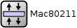
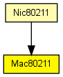
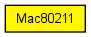

Implementation of the 802.11b MAC protocol. This module is intended to be used in combination with the SnrEval80211 and Decider80211 modules as physical layer.
This module supports ad-hoc mode only (does not generate or handle management frames), and does not support fragmentation, RTS threshold, duplication detection and recovery.
This component has been taken over from Mobility Framework 1.0a5.
The following diagram shows usage relationships between types. Unresolved types are missing from the diagram. Click here to see the full picture.
The following diagram shows inheritance relationships for this type. Unresolved types are missing from the diagram. Click here to see the full picture.
If a module type shows up more than once, that means it has been defined in more than one NED file.
| Nic80211 (compound module) |
This NIC implements an 802.11 network interface card. |
| Name | Type | Default value | Description |
|---|---|---|---|
| address | string | "auto" |
MAC address as hex string (12 hex digits), or "auto". "auto" values will be replaced by a generated MAC address in init stage 0. |
| maxQueueSize | int | ||
| rtsCts | bool | false | |
| bitrate | double | ||
| broadcastBackoff | int | ||
| mtu | int | 1500 |
| Name | Value | Description |
|---|---|---|
| display | i=block/layer |
| Name | Direction | Size | Description |
|---|---|---|---|
| uppergateIn | input | ||
| uppergateOut | output | ||
| lowergateIn | input | ||
| lowergateOut | output |
// // Implementation of the 802.11b MAC protocol. This module is intended // to be used in combination with the SnrEval80211 and Decider80211 // modules as physical layer. // // This module supports ad-hoc mode only (does not generate or handle // management frames), and does not support fragmentation, RTS threshold, // duplication detection and recovery. // // This component has been taken over from Mobility Framework 1.0a5. // simple Mac80211 { parameters: string address = default("auto"); // MAC address as hex string (12 hex digits), or // "auto". "auto" values will be replaced by // a generated MAC address in init stage 0. int maxQueueSize; bool rtsCts = default(false); double bitrate @unit("bps"); int broadcastBackoff; int mtu = default(1500); @display("i=block/layer"); gates: input uppergateIn @labels(Ieee802Ctrl); output uppergateOut; input lowergateIn @labels(Mac80211Pkt); output lowergateOut @labels(Mac80211Pkt); }